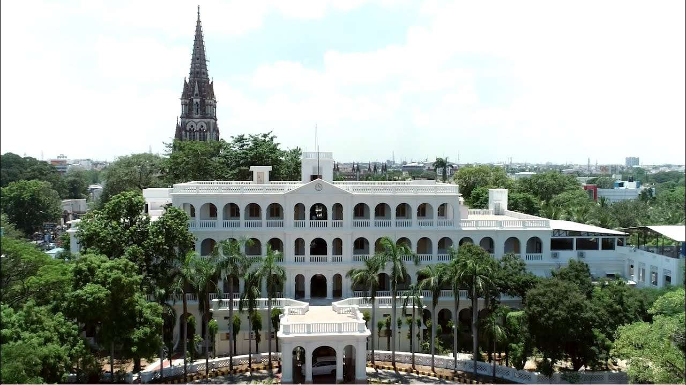
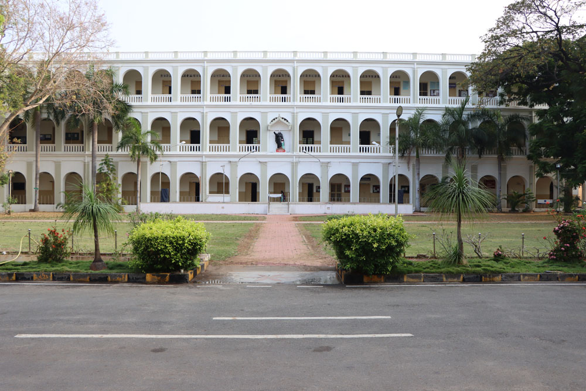

Joseph's College, Tiruchirappalli (SJC) is a Catholic college in Tiruchirappalli, Tamil Nadu, India. It was established in 1844 by the Society of Jesus (Jesuits) and it is regarded as one of the most prestigious institutions in India. It is currently an affiliated first-grade college of Bharathidasan University.
St. Joseph's College is an autonomous institution situated in Tiruchirappalli, Tamil Nadu, India and it is affiliated to Bharathidasan University. The institute sprawls over 75.864 acres of land with the facility of co-education.
Saint Joseph's University's ranking in the 2024 edition of Best Colleges is Regional Universities North, #8. Its tuition and fees are $51,340. Saint Joseph's University is a private institution that was founded in 1851.
In 2004, the University Grants Commission (UGC) recognised it as a College with Potential for Excellence (CPE). In 2012, the National Assessment and Accreditation Council (NAAC) accredited the college A Grade (3rd Cycle). In 2014, the NAAC gave the college Five Star status. NACC gave it A++ Rank in 2019.
In 2016, the Government of India gave St. Joseph's heritage college status, making it one of twelve colleges in India.

Management Studies
Economics – The department of economics dates to the college's founding. It was originally part of the history B.A. The department annually organizes a regional-level workshop on research methodology, the CADAR memorial lecture, and intercollegiate ECONS competitions. Dr. M. Sebastian, S.J., former department head, founded the Association of Economists of Tamil Nadu and Pondicherry.[5]
ECONS is a cultural and academic extravaganza organized by the students of the department. It provides an opportunity for students to expose their hidden talents and potential. Students of various colleges of Bharathidasan University compete for the Rolling Shield given by the department.
Commerce – The department of commerce opened in 1948, offering a three-year B.Com. degree. In 1954, it was suspended but revived in 1957. The postgraduate course M.Com. was started in 1988, followed by a full-time M.Phil. course in 2001, and a full-time Ph.D. research programme in 2003. In 2002, a specialized M.A. in transport management was launched.
Human resource management – The department of society, culture, and civilisation was started in 1983, offering its M.A. degree. Later, the department's nomenclature was changed to social dynamics, and then to human resource management. It is a value-based and socially oriented course. During the summer vacation, the department offers rural and tribal camps, industrial visits, and in-plant and in-house training programmes. All-India educational tours are organized to expose students to diverse cultures.[6]
Business administration – The department of business administration had its origin in the department of economics. It began to function independently in 2002 onwards as St. Joseph's Institute of Management.[7]
Commerce computer applications – The undergraduate degree course in commerce computer application was started in the year 2008, offering a B.Com. C.A. The M.Com. C.A was added in 2011.